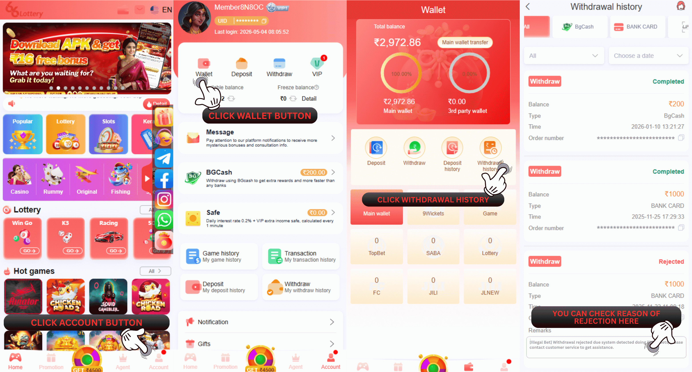

Illegal Betting
Withdrawal rejected due to our team have found out that your ID account have committed a violation for place betting in our platform.
Q : Why my withdraw rejected with remark illegal betting?
A : This withdraw reject issues because our team discovered that your account was involved in illegal betting activities. Specifically, it appears that you placed bets on both sides of the same game, which is against our platform’s betting rules, or engaged in other prohibited activities.
Q : What is the betting rules that i need to follow for avoiding this kind of issue appear in the future?
A : The only way to prevent this rejection issue appear is by doing the betting normally and avoiding to do the illegal betting or engaged in prohibited betting activity below :
Placing two-sided bets on the same game at the same time is prohibited (for instance, choosing green and red or big and small in the same round).
When placing a number wager, a total of seven numbers may be chosen in a single wager (no more).
Regularly wager on low odds bets in sports game for clear the turnover.
Doing a sparring with other ID and placing two-sided bets on the same game at the same time.
Q : What will happen to my ID account if my withdraw got rejected with remark Illegal Betting?
A : In order to maintain a fair and enjoyable gaming experience, our team will penalize this issue. These are to prevent our members from engaging in fraudulent activity in the future. There are several possible sanctions depending on the severity of the violation, which may include :
Deduction of game profits
Rejection of withdrawals
Turnover requirements
Q : What i need to do if my withdraw got rejected with remark Illegal Betting ?
A: If we find that our members have already followed the rules of the game, the withdrawals fund will proceed as normal. However, we would like to remind all of our members to not engage in the same activity in the future, and if we find that our members still intend to engage in the same violations in the future, we will impose additional penalties on their accounts.
Q : How to check the remark of my withdraw?
A : To check the remark of your withdrawal can be check with follow this guide
1.Visit our 66 Lottery official link at : https://www.66lottery.vip/
2.Click Wallet
3.Click Withdrawal History
4.Check the withdrawal remark you encounter
